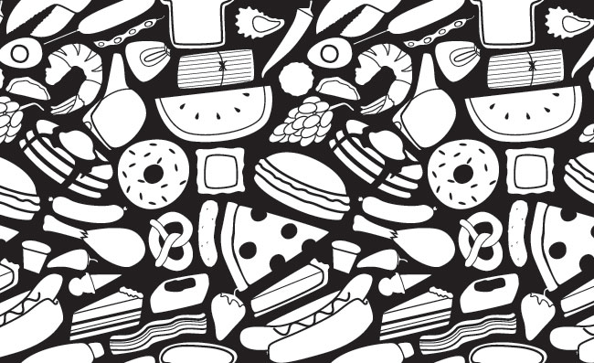
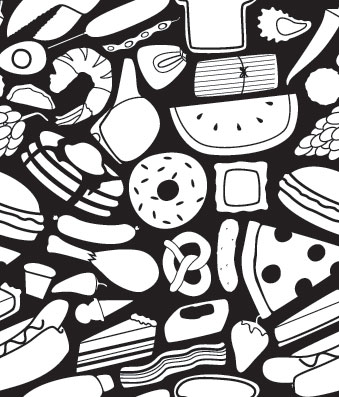

Food Vectors!
Download the .AI file Download the .EPS file
These food vectors can be used, free and without restrain, in many different web design, illustration, graphic design and user interface design projects! In this free vector pack of food objects you will find a variety of 30 culinary delights including cupcake vector, pickle vector, pizza vector, tamale vector, corn kernel vector, toast vector, oyster vector, watermelon vector, hamburger vector, pork chop vector, pea vector, jalapeno vector, corn dog vector, pancake vector, lobster vector, hot dog vector, egg vector, grape vector, chicken drumstick vector, pie vector, cake vector, pepper vector, strawberry vector, meatball vector, ice cream vector, ravioli vector, pretzel vector, shrimp vector, bacon vector, sausage vector.
If you're looking for some free food vectors then you've come to the right place! I've used these vectors in a few projects for web design and graphic design and was so pleased with the results that I decided to share them with the world. These food vectors are completely free, the only stipulation I make is that if you distribute them then you must have a link back to this article. with that said you are, of course, encouraged to share these free vectors on your blog, website or twitter feed.

I hope you enjoy these and have good use for them, thanks!
right click to download this tileable pattern:
